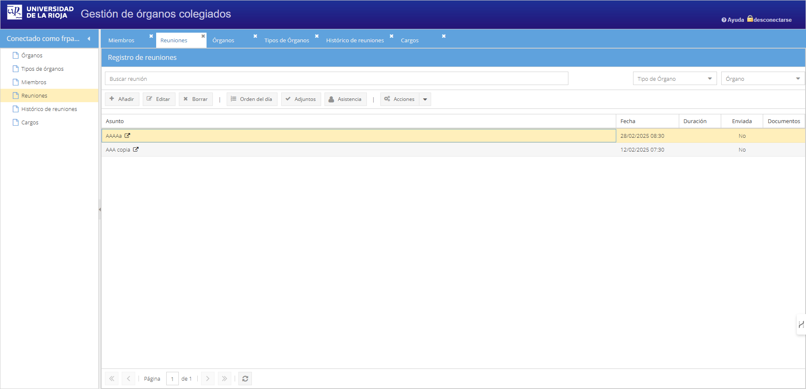

Plataforma de órganos colegiados
La primera fase de desarrollo se centra en tener una aplicación que facilite la preparación y seguimiento de las sesiones de Consejo de Gobierno, aunque el objetivo es que pueda ser utilizado por otros órganos colegiados.
Órganos colegiados
- Composición de miembros
- Elaboración de convocatorias y orden del día
- Perfiles de usuario:
- Miembros (acceden a través de Sede Electrónica)
- Personal administrativo, tanto para las funciones de secretaría como del personal que remite puntos y documentación.
- Integración del Voto Electrónico para aquellos puntos del orden del día que se someten a votación.
- Archivo de los acuerdos alcanzados
Alternativas consideradas
En el momento inicial de plantamiento de la necesidad, se pensó en adquirir una solución que aunara tanto la gestión de órganos colegiados como el voto electrónico. Pronto se observó que la vía a seguir es buscar dos productos separados que permitan una relativa comunicación.
Fruto de una revisión y comunicación con distintas universidades, se obtienen hallazgos tanto en cuanto a voto electrónico como la gestión de órganos colegiados.
En cuanto a órganos colegiados, la solución pasa por aplicaciones compradas, desarrolladas in-house o gestión sin aplicación. Resulta relevante el caso de GOC, aplicación desarrollada inicialmente en la Universitat Jaume I con el apoyo de las universidades valencianas y adoptada por algunas universidades mediante licitación para que desarrollen necesidades propias.
Gracias al contacto de nuestro SG y la SG de la UJI, me pongo en contacto con el técnico Ricardo Borillo. Su software es abierto y libre pero era necesario que nos dieran acceso a algunos componentes adicionales. La comunicación es fluida, y se monta aquí con alguna personalización propia y nuestra autenticación con CUASI:

No obstante, para que esta aplicación funcione es necesario desarrollar servicios que provean información. Se empieza el desarrollo de una aplicación para gestionar los miembros de órganos y que sirva para dar esa información a GOC mediante servicios.
Según se va desarrollando esta aplicación propia y valorando el esfuerzo que sería necesario para personalizar GOC para usarse en la UR, se opta por desarrollar una aplicación propia en la que va a resultar más fácil desarrollar nuestras propias necesidades, eso sí, con un diseño muy general. Es decir, un diseño que permita la gestión de órganos colegiados en sentido amplio: Consejo de Gobierno, COMACA, comisiones de plazas, etc.
Órganos unipersonales
Se plantea la siguiente casuística:
- Supervisión de altas/bajas de cargos. Sistema de avisos de los cambios que se derivan (a Personal, Servicio Informático, etc.).
Para dar respuesta a esta necesidad, el primer planteamiento puede ser incluirlo dentro de esta aplicación, ya que comparte ciertas similitudes en cuanto al modelo de datos. Además, se pueden integrar otras funcionalidades (a fin de cuentas se trata de órganos):
- Archivo de las resoluciones y otros documentos que emite el órgano unipersonal.
- Petición de número de resolución rectoral.
Acerca de
Igual que ocurre con otras aplicaciones informáticas que tienen un nombre que las identifica (Racima, Selene, Face, Sorolla, Lexnet, Geiser, Orve, Universitas XXI, Sigma, etc.), para esta aplicación se ha elegido el nombre "Consilium", que viene del latín y que denota las ideas de consejo, deliberación, reunión o consejo. Y qué mejor que usar el latín como guiño al Secretario General ;)